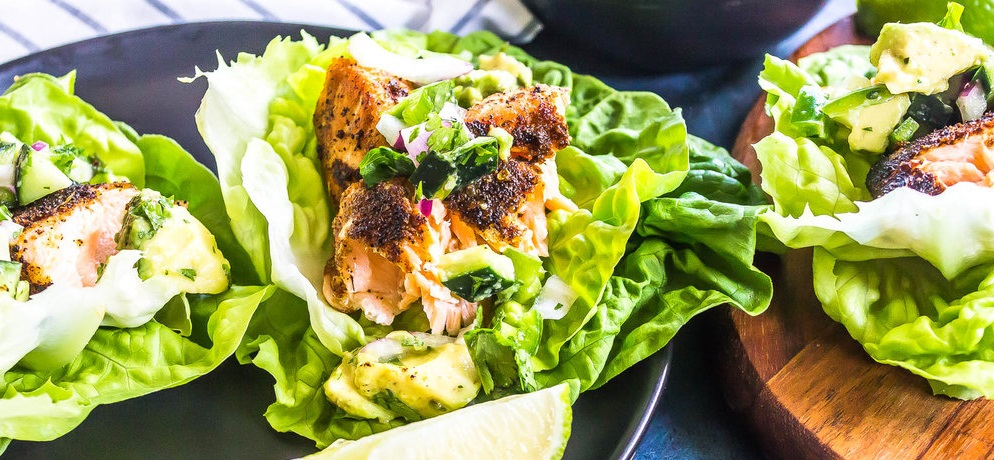

Healthy Mexican Food
You don't need to sacrifice taste when you're trying to eat healthy. Here we have some healthy recipes to try when you feel like heating savory Mexican food without cheating your diet.

Keto Taco
These days it seems like everyone is trying their hand at the popular new diet known as keto. A number of new recipes and alternatives have resulted from the craze. Needless to say, tacos were not to be left out. Here I have a recipe for quick and simple keto tacos that won't ruin your diet.
Here's What You'll Need
- 1 Tbsp olive oil
- 1lb Your choice of meat
- 3/4 cup chopped yellow onion
- 2 cloves of garlic
- Salt and freshly ground black pepper
- 1 Tbsp chili powder
- 1 tsp ground cumin
- 1/2 tsp paprika
- 1/2 cup tomato sauce
- 1/2 cup low-sodium chicken broth
- Tomato Sauce
- Romaine Lettuce
Steps
- Heat olive oil in a non-stick skillet over medium-high heat. Add onion and saute 2 minutes. Add your choice of meat and garlic, season with salt and pepper, and cook, tossing and breaking up turkey occasionally, until cooked through, about 5 minutes.
- Add chili powder, cumin, paprika, tomato sauce and chicken broth. Reduce to a simmer and cook about 5 minutes until sauce has reduced. Serve mixture over lettuce leaves with desired toppings.
- Enjoy!

Caldo De Res
This dish is known to be the staple food of most Mexican households during the cold seasons and sick seasons. This soup is definitely one to share with family and friends!
Here's What You'll Need
- 2 pounds beef shank, with bone
- 1 tbsp vegetable oil
- 2 tsp salt
- 2 tsp ground black pepper
- 1 onion, chopped
- 14.5 ounce can of diced tomatoes
- 3 cups beef broth
- 4 cups water
- 2 medium carrot, coarsely chopped
- 1/4 cup chopped fresh cilantro
- 1 potato, quartered
- 2 ears corn, husked and cut into thirds
- 2 chayotes, quartered
- 1 medium head cabbage, cored and cut into wedges
- 1/4 cup sliced pickled jalapenos
- 1/4 cup finely chopped onion
- 1 cup chopped fresh cilantro
- 2 limes, cut into wedges
- 4 radishes, quartered
Steps
- Cut the meat from the beef bones into about 1/2 inch pieces, leaving some on the bones.
- Heat a heavy soup pot over medium-high heat until very hot. Add the oil, tilting the pan to coat the bottom. Add the meat and bones, and season with salt and pepper. Cook and stir until thoroughly browned.
- Add 1 onion, and cook until onion is also lightly browned. Stir in the tomatoes and broth. The liquid should cover the bones by 1/2 inch. If not, add enough water to compensate. Reduce heat to low, and simmer for 1 hour with the lid on loosely. If meat is not tender, continue cooking for another 10 minutes or so.
- Pour in the water, and return to a simmer. Add the carrot and 1/4 cup cilantro, and cook for 10 minutes, then stir in the potato, corn and chayote. Simmer until vegetables are tender. Push the cabbage wedges into the soup, and cook for about 10 more minutes.
- Ladle soup into large bowls, including meat vegetables and bones. Garnish with jalapenos, minced onion, and additional cilantro. Squeeze lime juice over all, and serve with radishes.
- Enjoy!